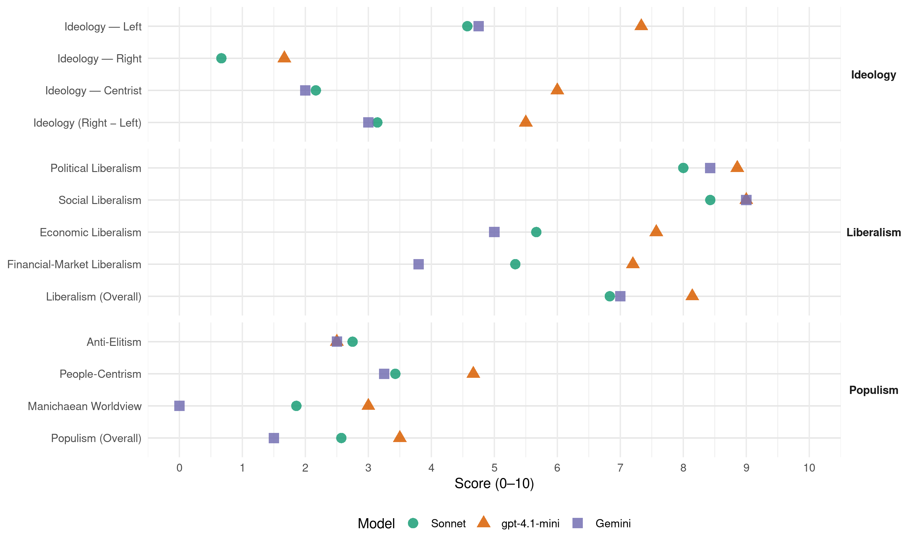

90/Greens (Germany, 2021)
manifesto_id 41113_202109
Get full text: This site shows derived annotations and short verbatim quotes only. The full manifesto text is © Manifesto Project / WZB — obtain it via manifesto-project.wzb.eu using the manifesto_id above.
Headline scores
| Dimension | Sonnet | gpt-4.1-mini | Gemini |
|---|---|---|---|
| Populism (Overall) | 2.6 | 3.5 | 1.5 |
| Anti-Elitism | 2.8 | 2.5 | 2.5 |
| People-Centrism | 3.4 | 4.7 | 3.2 |
| Manichaean Worldview | 1.9 | 3.0 | 0.0 |
| Ideology (Right − Left) | 3.1 | 5.5 | 3.0 |
| Liberalism (Overall) | 6.8 | 8.1 | 7.0 |
| Political Liberalism | 8.0 | 8.9 | 8.4 |
| Social Liberalism | 8.4 | 9.0 | 9.0 |
| Economic Liberalism | 5.7 | 7.6 | 5.0 |
| Financial-Market Liberalism | 5.3 | 7.2 | 3.8 |
Evidence per dimension
Economic Liberalism
Gemini · score 7.0 · verified · chunk 1
“sozial-ökologische Marktwirtschaft entwickelt, die zukunftsfähige Jobs, sozialen Schutz und fairen Wettbewerb”
wie man eine sozial-ökologische Marktwirtschaft entwickelt, die zukunftsfähige Jobs, sozialen Schutz und fairen Wettbewerb in Deutschland und
Gemini · score 7.0 · verified · chunk 2
“Dynamik eines fairen Wettbewerbs und die Stärke”
und wir sind überzeugt, dass das freie und kreative Handeln, die Dynamik eines fairen Wettbewerbs und die Stärke von gesellschaftlicher Kooperation innovativ Probleme lösen.
Gemini · score 4.0 · verified · chunk 3
“Privatisierungen öffentlicher Unternehmen im Bereich der öffentlichen Pflichtaufgaben”
die Kontrolle bei Bauvorhaben und großen öffentlichen Beschaffungen wird verbessert. Weitere Privatisierungen öffentlicher Unternehmen im Bereich der öffentlichen Pflichtaufgaben der Daseinsvorsorge lehnen wir ab.
Gemini · score 3.0 · verified · chunk 4
“Mietobergrenzen im Bestand ermöglicht werden”
Bundesgesetz gewährleistet, dass Mietobergrenzen im Bestand ermöglicht werden und die Mietpreisbremse entfristet
Gemini · score 5.0 · mixed · chunk 5
“Auswirkungen auf den Wettbewerb und den freien Markt”
Korruption, Steuerhinterziehung, Geldwäsche oder Manipulationen im Finanzmarkt sind Rechtsverstöße, die verheerende Auswirkungen auf den Wettbewerb und den freien Markt, für Umwelt und Menschen(rechte) haben können.
Gemini · score 4.0 · verified · chunk 6
“Wettbewerbsregeln des Binnenmarkts dürfen Kommunen nicht zur Privatisierung”
nicht jeden Lebensbereich regulieren. Die Wettbewerbsregeln des Binnenmarkts dürfen Kommunen nicht zur Privatisierung öffentlicher Güter zwingen. In EU- Handelsabkommen
gpt-4.1-mini · score 8.0 · verified · chunk 1
“Wir wissen, wie man eine sozial-ökologische Marktwirtschaft entwickelt, die zukunftsfähige Jobs, sozialen Schutz und fairen Wettbewerb in Deutschland und Europa zusammenbringt”
Wir wissen, wie man eine sozial-ökologische Marktwirtschaft entwickelt, die zukunftsfähige Jobs, sozialen Schutz und fairen Wettbewerb in Deutschland und Europa zusammenbringt, wie man der Globalisierung klare Regeln setzt und multinationale Konzerne angemessen besteuert.
gpt-4.1-mini · score 8.0 · verified · chunk 2
“freie Märkte, Wettbewerb, Unternehmen, Steuern, Handel, Regulierung, Privatisierung”
…fördern freie Märkte, Wettbewerb, Unternehmen, Steuern, Handel, Regulierung, Privatisierung…
gpt-4.1-mini · score 7.0 · verified · chunk 3
“Wir wollen den Bundeshaushalt nachhaltiger, gerechter und transparenter machen.”
Wir wollen den Bundeshaushalt nachhaltiger, gerechter und transparenter machen. Nachhaltiger wird er, wenn wir die umweltschädlichen Subventionen endlich beenden. Immer noch subventionieren die öffentlichen Haushalte des Landes mit über 50 Milliarden Euro klimaschädliches Verhalten.
gpt-4.1-mini · score 7.0 · verified · chunk 4
“Mittel für den sozialen Wohnungsbau deutlich erhöhen”
Wir werden deshalb die Mittel für den sozialen Wohnungsbau deutlich erhöhen und verstetigen, statt sie zu kürzen. Wir werden die Kommunen unterstützen, ihre bestehenden Wohnungsgesellschaften und gemeinwohlorientierten Baugenossenschaften zu stärken und neue zu gründen.
gpt-4.1-mini · score 7.0 · verified · chunk 5
“Wir wollen die Finanzberatung vom Kopf auf die Füße stellen”
nternehmen. Wir wollen die Finanzberatung vom Kopf auf die Füße stellen. Dafür schaffen wir ein einheitliches und transparentes Berufsbild für Finanzberaterinnen. Alle Vermittlerinnen und Berater*innen sollen künftig von der BaFin beaufsichtigt werden. Wir wollen weg von der Provisionsberatung und schrittweise zu einer unabhängigen Honorarberatung übergehen.
gpt-4.1-mini · score 8.0 · verified · chunk 6
“Binnenmarkt der Welt hat die EU wirtschaftlich erheblichen Einfluss”
Mit dem größten Binnenmarkt der Welt hat die EU wirtschaftlich erheblichen Einfluss. Diesen Hebel wollen wir nutzen, um die globale Transformation gerecht zu gestalten und ambitionierte Standards zu setzen.
gpt-4.1-mini · score 8.0 · verified · chunk 7
“Wir wollen die verstärkte Zusammenarbeit der Streitkräfte in der EU ausbauen”
…immer mehr Geld in nationale militärische Parallelstrukturen zu leiten, wollen wir die verstärkte Zusammenarbeit der Streitkräfte in der EU ausbauen, militärische Fähigkeiten bündeln, eine effizientere Beschaffung erreichen und allgemein…
Sonnet · score 6.0 · verified · chunk 1
“fairen Wettbewerb in Deutschland und Europa”
sozial-ökologische Marktwirtschaft entwickelt, die zukunftsfähige Jobs, sozialen Schutz und fairen Wettbewerb in Deutschland und Europa zusammenbringt
Sonnet · score 6.0 · mixed · chunk 2
“fairen Wettbewerbs und die Stärke von gesellschaftlicher Kooperation”
Wir sind überzeugt, dass das freie und kreative Handeln, die Dynamik eines fairen Wettbewerbs und die Stärke von gesellschaftlicher Kooperation innovativ Probleme lösen.
Sonnet · score 4.0 · mixed · chunk 3
“Privatisierungen öffentlicher Unternehmen im Bereich”
Weitere Privatisierungen öffentlicher Unternehmen im Bereich der öffentlichen Pflichtaufgaben der Daseinsvorsorge lehnen wir ab.
Sonnet · score 4.0 · mixed · chunk 4
“Mietpreisbremse entfristet und deutlich nachgeschärft”
dass Mietobergrenzen im Bestand ermöglicht werden und die Mietpreisbremse entfristet und deutlich nachgeschärft wird.
Sonnet · score 5.0 · verified · chunk 5
“Wettbewerb und den freien Markt”
Korruption, Steuerhinterziehung, Geldwäsche oder Manipulationen im Finanzmarkt sind Rechtsverstöße, die verheerende Auswirkungen auf den Wettbewerb und den freien Markt haben können.
Sonnet · score 6.0 · mixed · chunk 6
“fairen Marktzugang für ausländische Investitionen”
Unsere Handelsbeziehungen mit China wollen wir nutzen, um fairen Marktzugang für ausländische Investitionen, Rechtssicherheit und gleiche Wettbewerbsbedingungen einzufordern.
Sonnet · score 6.0 · verified · chunk 7
“Nachfragemacht des Staates für Innovation”
die Potenziale der Erneuerbaren ausschöpfen und die Nachfragemacht des Staates für Innovation und Nachhaltigkeit nutzen
Financial-Market Liberalism
Gemini · score 4.0 · verified · chunk 2
“das riskante Investmentgeschäft muss vom Einlagen- und Kreditgeschäft getrennt werden”
schrittweise auf 10 Prozent erhöhen. Das riskante Investmentgeschäft muss vom Einlagen- und Kreditgeschäft getrennt werden (Trennbankensystem). Auch Investmentbanken müssen konsequent
Gemini · score 4.0 · verified · chunk 3
“Aushöhlung des Geld- und Währungsmonopols durch private Währungen”
Ein digitaler Euro löst klassisches Bargeld nicht ab, sondern ergänzt es. Eine Aushöhlung des Geld- und Währungsmonopols durch private Währungen mächtiger Großkonzerne lehnen wir strikt ab.
Gemini · score 3.0 · verified · chunk 4
“Kreditrate nachzuzahlen, soll Kündigungen und”
Die Möglichkeit, die Miete oder Kreditrate nachzuzahlen, soll Kündigungen und Zwangsräumungen abwenden.
Gemini · score 5.0 · verified · chunk 5
“Finanzberatung vom Kopf auf die Füße stellen”
Gewinne der Banken und Versicherungen, aber schlecht für die Kund*innen. Wir wollen die Finanzberatung vom Kopf auf die Füße stellen. Dafür schaffen wir ein einheitliches und transparentes Berufsbild
Gemini · score 3.0 · verified · chunk 6
“IWF sollte Ländern des globalen Südens auch bei der Einführung und Durchführung von Kapitalverkehrskontrollen helfen”
nicht genutzte Sonderziehungsrechte Ländern des globalen Südens zur Verfügung stellen, wie Kanada es bereits getan hat. Der IWF sollte Ländern des globalen Südens auch bei der Einführung und Durchführung von Kapitalverkehrskontrollen helfen und dafür mit den Staaten mit globalen Finanzzentren
gpt-4.1-mini · score 7.0 · verified · chunk 1
“Wir wollen den öffentlichen Einfluss darauf stärken. Dazu wollen wir nach Möglichkeit die staatlichen Anteile an den vier Übertragungsnetzbetreibern in Deutschland erhöhen und sie in eine Bundesnetzgesellschaft in Bundeshand überführen”
Da Stromübertragungsnetze natürliche Monopole und kritische Infrastruktur darstellen, wollen wir den öffentlichen Einfluss darauf stärken. Dazu wollen wir nach Möglichkeit die staatlichen Anteile an den vier Übertragungsnetzbetreibern in Deutschland erhöhen und sie in eine Bundesnetzgesellschaft in Bundeshand überführen.
gpt-4.1-mini · score 8.0 · verified · chunk 2
“Finanzmärkte, Banken, Kapital, Kredit, Investitionen, Transparenz, Regulierung”
…setzen uns für Finanzmärkte, Banken, Kapital, Kredit, Investitionen, Transparenz, Regulierung ein…
gpt-4.1-mini · score 7.0 · verified · chunk 3
“Die Bankenunion wird durch eine gemeinsame Einlagensicherung als Rückversicherung vollendet.”
Die Bankenunion wird durch eine gemeinsame Einlagensicherung als Rückversicherung vollendet, damit jeder Euro überall gleich sicher ist. Wir stehen zur Unabhängigkeit der Europäischen Zentralbank.
gpt-4.1-mini · score 7.0 · verified · chunk 5
“Die Finanzaufsicht soll von der Möglichkeit, den Vertrieb von schädlichen irreführenden Finanzprodukten zu untersagen, häufiger Gebrauch machen”
en. Die Finanzaufsicht soll von der Möglichkeit, den Vertrieb von schädlichen irreführenden Finanzprodukten zu untersagen, häufiger Gebrauch machen und für mehr Finanzbildung sorgen. Zusätzlich wollen wir die Kompetenzen der BaFin im Verbraucherschutz stärken und die Beteiligungsrechte des Verbraucherbeirats ausweiten.
gpt-4.1-mini · score 7.0 · verified · chunk 6
“strikteren Karenzzeiten beim Wechsel zwischen Politik und Wirtschaft”
Wir wollen weitere Schritte gehen – mit einem verbindlichen Lobbyregister für alle EU-Institutionen, strikteren Karenzzeiten beim Wechsel zwischen Politik und Wirtschaft und einem „legislativen Fußabdruck“, durch den die Einflussnahme auf Gesetzgebung überprüfbarer wird, kontrolliert durch eine unabhängige Ethikbehörde, die Sanktionen verhängen kann.
Sonnet · score 6.0 · verified · chunk 1
“Energiemarktdesign ändern wir”
Das Energiemarktdesign ändern wir, sodass erneuerbarer Strom nicht länger ausgebremst wird. Wir stellen Sonne und Wind ins Zentrum
Sonnet · score 4.0 · mixed · chunk 2
“EU-weite Finanztransaktionssteuer mit breiter Bemessungsgrundlage”
Spekulation und Kurzfristorientierung werden wir, unter anderem durch eine EU-weite Finanztransaktionssteuer mit breiter Bemessungsgrundlage, unattraktiv machen.
Sonnet · score 5.0 · mixed · chunk 3
“Aushöhlung des Geld- und Währungsmonopols durch private Währungen”
Eine Aushöhlung des Geld- und Währungsmonopols durch private Währungen mächtiger Großkonzerne lehnen wir strikt ab.
Sonnet · score 4.0 · verified · chunk 4
“Immobilienregister der Eigentümer*innen einzuführen”
Wir planen, Transparenz durch ein Immobilienregister der Eigentümerinnen einzuführen, die Grundbücher auch für Journalistinnen
Sonnet · score 6.0 · verified · chunk 5
“Finanzberatung vom Kopf auf die Füße stellen”
Wir wollen die Finanzberatung vom Kopf auf die Füße stellen. Dafür schaffen wir ein einheitliches und transparentes Berufsbild für Finanzberater*innen.
Sonnet · score 4.0 · mixed · chunk 6
“striktere Regulierungen einsetzen, um exzessive Nahrungsmittelspekulation”
Wir werden uns in der EU für striktere Regulierungen einsetzen, um exzessive Nahrungsmittelspekulation zu verhindern. Dafür braucht es strenge Berichtspflichten für Händler*innen sowie strikte Preis- und Positionslimits
Political Liberalism
Gemini · score 8.0 · verified · chunk 1
“Europa als Wertegemeinschaft demokratisch zu stärken”
fest entschlossen, Europa als Wertegemeinschaft demokratisch zu stärken und im globalen Systemwettbewerb
Gemini · score 8.0 · verified · chunk 2
“das Primat der demokratischen Politik zu behaupten”
nicht mächtiger sein als Staaten – es gilt das Primat der demokratischen Politik zu behaupten. Wir wollen die enorme Kluft zwischen Arm
Gemini · score 8.0 · verified · chunk 3
“starke Kontrolle durch das Europaparlament sichergestellt ist”
nicht durch einzelne Länder blockiert werden kann und eine starke Kontrolle durch das Europaparlament sichergestellt ist. Der Europäische Stabilitätsmechanismus
Gemini · score 8.0 · verified · chunk 4
“unsere liberale Demokratie zu stärken”
Gleichberechtigung und mehr Beteiligung unsere liberale Demokratie zu stärken, in Deutschland und in Europa
Gemini · score 9.0 · verified · chunk 5
“parlamentarische Demokratie der Europäischen Union zu stärken”
der europäischen Institutionen. Unser Ziel ist, die parlamentarische Demokratie der Europäischen Union zu stärken: mit einem Parlament, das in allen Bereichen gleichberechtigt
Gemini · score 9.0 · verified · chunk 6
“parlamentarische Demokratie der Europäischen Union zu stärken”
Unser Ziel ist, die parlamentarische Demokratie der Europäischen Union zu stärken: mit einem Parlament, das in allen Bereichen
Gemini · score 9.0 · verified · chunk 7
“gemeinsam mit anderen liberalen Demokratien der OSZE”
Interessen zu dominieren, kann nur gemeinsam mit anderen liberalen Demokratien der OSZE für eine wertegeleitete und völkerrechtsorientierte
gpt-4.1-mini · score 9.0 · verified · chunk 1
“Macht ist in einer Demokratie nur geliehen. Diese Leihgabe verpflichtet zu sauberer Politik – zu einer Politik, die das Wohl der Bürger*innen über das persönliche Interesse stellt, die Rechenschaft ablegt und sich selbst Grenzen setzt”
Macht ist in einer Demokratie nur geliehen. Diese Leihgabe verpflichtet zu sauberer Politik – zu einer Politik, die das Wohl der Bürger*innen über das persönliche Interesse stellt, die Rechenschaft ablegt und sich selbst Grenzen setzt. In diesem Sinne werden wir handeln.
gpt-4.1-mini · score 9.0 · verified · chunk 2
“Demokratie, Rechte, Wahlen, Gerichte, Medien, Regierung, Parlament”
…müssen Demokratie, Rechte, Wahlen, Gerichte, Medien, Regierung, Parlament schützen und stärken…
gpt-4.1-mini · score 8.0 · verified · chunk 3
“Wir wollen die Unabhängigkeit der Europäischen Zentralbank.”
Wir begrüßen die Debatte der EZB über ihre neue geldpolitische Strategie. Wir wollen die Unabhängigkeit der Europäischen Zentralbank. Gleichzeitig begrüßen wir die Debatte der EZB über ihre neue geldpolitische Strategie.
gpt-4.1-mini · score 9.0 · verified · chunk 4
“Demokratie, Freiheit und Toleranz sind mutige Menschen”
Für Demokratie, Freiheit und Toleranz sind mutige Menschen in der Vergangenheit auf die Straße gegangen: Bürgerrechtlerinnen, Umweltbewegte, Friedensaktivistinnen und Frauenrechtler*innen.
gpt-4.1-mini · score 9.0 · verified · chunk 5
“Wir treten für Vielfalt, Anerkennung und gleiche Rechte”
nden Weise, wollen wir voranbringen. Wir treten für Vielfalt, Anerkennung und gleiche Rechte Einheit in Vielfalt Wir alle sind unterschiedlich, aber an Rechten und Würde gleich. Zusammenhalt in Vielfalt setzt voraus, respektiert, anerkannt und gehört zu werden, mitgestalten und teilhaben zu können, ohne Angst frei zu leben und sich als Gleichberechtigte zu begegnen, das Gemeinsame neben den Unterschieden zu sehen.
gpt-4.1-mini · score 9.0 · verified · chunk 6
“demokratische Werte wie Gemeinsamkeit, Toleranz, Integration, Inklusion”
Im Sport, dem größten Träger der organisierten Zivilgesellschaft und des freiwilligen Engagements, werden täglich demokratische Werte wie Gemeinsamkeit, Toleranz, Integration, Inklusion, Engagement und Gesundheitsprävention gelebt und vermittelt.
gpt-4.1-mini · score 9.0 · verified · chunk 7
“Demokratie und Rechtsstaatlichkeit gemeinsam zu entwickeln”
…strategische Interessen auf Grundlage von europäischen Werten wie Multilateralismus, Demokratie und Rechtsstaatlichkeit gemeinsam zu entwickeln und geschlossener und überzeugender zu vertreten. Das nicht auf Fähigkeiten…
Sonnet · score 8.0 · verified · chunk 1
“Macht ist in einer Demokratie nur geliehen”
Macht ist in einer Demokratie nur geliehen. Diese Leihgabe verpflichtet zu sauberer Politik – zu einer Politik, die das Wohl der Bürger*innen über das persönliche Interesse stellt
Sonnet · score 7.0 · verified · chunk 2
“Primat der demokratischen Politik zu behaupten”
Globale Konzerne sollen nicht mächtiger sein als Staaten – es gilt das Primat der demokratischen Politik zu behaupten. Wir wollen die enorme Kluft zwischen Arm und Reich verringern.
Sonnet · score 7.0 · verified · chunk 3
“Kontrolle durch das Europaparlament sichergestellt ist”
Er muss so gestaltet werden, dass er im Krisenfall nicht durch einzelne Länder blockiert werden kann und eine starke Kontrolle durch das Europaparlament sichergestellt ist.
Sonnet · score 8.0 · verified · chunk 4
“unsere liberale Demokratie zu stärken”
Nun gilt es mit voller Gleichberechtigung und mehr Beteiligung unsere liberale Demokratie zu stärken, in Deutschland und in Europa
Sonnet · score 8.0 · verified · chunk 5
“parlamentarische Demokratie der Europäischen Union zu stärken”
Unser Ziel ist, die parlamentarische Demokratie der Europäischen Union zu stärken: mit einem Parlament, das in allen Bereichen gleichberechtigt mit dem Rat entscheidet
Sonnet · score 9.0 · verified · chunk 6
“parlamentarische Demokratie der Europäischen Union zu stärken”
Unser Ziel ist, die parlamentarische Demokratie der Europäischen Union zu stärken: mit einem Parlament, das in allen Bereichen gleichberechtigt mit dem Rat entscheidet
Sonnet · score 9.0 · verified · chunk 7
“starke Parlamente und Abgeordnete”
wollen wir das Verhältnis von Regierung, Parlament und Bürger*innen neu begründen: starke Parlamente und Abgeordnete, neue Formen der Beteiligung
Liberalism (Overall)
Gemini · score 8.0 · verified · chunk 1
“sozial-ökologische Marktwirtschaft entwickelt, die zukunftsfähige Jobs, sozialen Schutz und fairen Wettbewerb”
wie man eine sozial-ökologische Marktwirtschaft entwickelt, die zukunftsfähige Jobs, sozialen Schutz und fairen Wettbewerb in Deutschland und
Gemini · score 7.0 · verified · chunk 2
“Dynamik eines fairen Wettbewerbs und die Stärke”
und wir sind überzeugt, dass das freie und kreative Handeln, die Dynamik eines fairen Wettbewerbs und die Stärke von gesellschaftlicher Kooperation innovativ Probleme lösen.
Gemini · score 6.0 · verified · chunk 3
“gleichberechtigte Teilhabe und auf Schutz vor Diskriminierung”
Menschen mit Behinderungen haben das Recht auf gleichberechtigte Teilhabe und auf Schutz vor Diskriminierung in allen Bereichen der Gesellschaft.
Gemini · score 6.0 · verified · chunk 4
“unsere liberale Demokratie zu stärken”
Gleichberechtigung und mehr Beteiligung unsere liberale Demokratie zu stärken, in Deutschland und in Europa
Gemini · score 7.0 · verified · chunk 5
“Vielfalt, Anerkennung und gleiche Rechte”
nden Weise, wollen wir voranbringen. Wir treten ein für Vielfalt, Anerkennung und gleiche Rechte Einheit in Vielfalt Wir alle sind unterschiedlich, aber an
Gemini · score 6.0 · verified · chunk 6
“parlamentarische Demokratie der Europäischen Union zu stärken”
Unser Ziel ist, die parlamentarische Demokratie der Europäischen Union zu stärken: mit einem Parlament, das in allen Bereichen
Gemini · score 9.0 · verified · chunk 7
“gemeinsam mit anderen liberalen Demokratien der OSZE”
Interessen zu dominieren, kann nur gemeinsam mit anderen liberalen Demokratien der OSZE für eine wertegeleitete und völkerrechtsorientierte
gpt-4.1-mini · score 8.0 · verified · chunk 1
“Macht ist in einer Demokratie nur geliehen. Diese Leihgabe verpflichtet zu sauberer Politik – zu einer Politik, die das Wohl der Bürger*innen über das persönliche Interesse stellt”
Macht ist in einer Demokratie nur geliehen. Diese Leihgabe verpflichtet zu sauberer Politik – zu einer Politik, die das Wohl der Bürger*innen über das persönliche Interesse stellt, die Rechenschaft ablegt und sich selbst Grenzen setzt. In diesem Sinne werden wir handeln.
gpt-4.1-mini · score 9.0 · verified · chunk 2
“Demokratie, Rechte, Bürger*innenrechte, freie Märkte, Finanzmärkte, Regulierung”
…Demokratie, Rechte, Bürger*innenrechte, freie Märkte, Finanzmärkte, Regulierung sind zentrale Themen…
gpt-4.1-mini · score 8.0 · verified · chunk 3
“Wir wollen den Bundeshaushalt nachhaltiger, gerechter und transparenter machen.”
Wir wollen den Bundeshaushalt nachhaltiger, gerechter und transparenter machen. Nachhaltiger wird er, wenn wir die umweltschädlichen Subventionen endlich beenden. Immer noch subventionieren die öffentlichen Haushalte des Landes mit über 50 Milliarden Euro klimaschädliches Verhalten.
gpt-4.1-mini · score 8.0 · verified · chunk 4
“Demokratie, Freiheit und Toleranz sind mutige Menschen”
Für Demokratie, Freiheit und Toleranz sind mutige Menschen in der Vergangenheit auf die Straße gegangen: Bürgerrechtlerinnen, Umweltbewegte, Friedensaktivistinnen und Frauenrechtler*innen.
gpt-4.1-mini · score 8.0 · verified · chunk 5
“Wir treten für Vielfalt, Anerkennung und gleiche Rechte”
nden Weise, wollen wir voranbringen. Wir treten für Vielfalt, Anerkennung und gleiche Rechte Einheit in Vielfalt Wir alle sind unterschiedlich, aber an Rechten und Würde gleich. Zusammenhalt in Vielfalt setzt voraus, respektiert, anerkannt und gehört zu werden, mitgestalten und teilhaben zu können, ohne Angst frei zu leben und sich als Gleichberechtigte zu begegnen, das Gemeinsame neben den Unterschieden zu sehen.
gpt-4.1-mini · score 8.0 · verified · chunk 6
“demokratische Werte wie Gemeinsamkeit, Toleranz, Integration, Inklusion”
Im Sport, dem größten Träger der organisierten Zivilgesellschaft und des freiwilligen Engagements, werden täglich demokratische Werte wie Gemeinsamkeit, Toleranz, Integration, Inklusion, Engagement und Gesundheitsprävention gelebt und vermittelt.
gpt-4.1-mini · score 8.0 · verified · chunk 7
“Demokratie und Rechtsstaatlichkeit gemeinsam zu entwickeln”
…strategische Interessen auf Grundlage von europäischen Werten wie Multilateralismus, Demokratie und Rechtsstaatlichkeit gemeinsam zu entwickeln und geschlossener und überzeugender zu vertreten. Das nicht auf Fähigkeiten…
Sonnet · score 7.0 · verified · chunk 1
“Macht ist in einer Demokratie nur geliehen”
Macht ist in einer Demokratie nur geliehen. Diese Leihgabe verpflichtet zu sauberer Politik – zu einer Politik, die das Wohl der Bürger*innen über das persönliche Interesse stellt
Sonnet · score 6.0 · mixed · chunk 2
“fairen Wettbewerbs und die Stärke von gesellschaftlicher Kooperation”
Wir sind überzeugt, dass das freie und kreative Handeln, die Dynamik eines fairen Wettbewerbs und die Stärke von gesellschaftlicher Kooperation innovativ Probleme lösen.
Sonnet · score 6.0 · verified · chunk 3
“diskriminierungsfreie Gesundheitsversorgung gesichert sein”
Auch für LSBTIQ* muss diskriminierungsfreie Gesundheitsversorgung gesichert sein. Dafür werden wir den Anspruch auf medizinische Maßnahmen für Trans- und Inter-Menschen gesetzlich verankern.
Sonnet · score 6.0 · verified · chunk 4
“unsere liberale Demokratie zu stärken”
Nun gilt es mit voller Gleichberechtigung und mehr Beteiligung unsere liberale Demokratie zu stärken, in Deutschland und in Europa
Sonnet · score 7.0 · verified · chunk 5
“LSBTIQ* gleichberechtigte Teilhabe am gesellschaftlichen Leben”
mit dem Ziel, LSBTIQ* gleichberechtigte Teilhabe am gesellschaftlichen Leben zu garantieren, um die Akzeptanz von Vielfalt zu fördern.
Sonnet · score 7.0 · verified · chunk 6
“parlamentarische Demokratie der Europäischen Union zu stärken”
Unser Ziel ist, die parlamentarische Demokratie der Europäischen Union zu stärken: mit einem Parlament, das in allen Bereichen gleichberechtigt mit dem Rat entscheidet
Sonnet · score 8.0 · verified · chunk 7
“Multilateralismus, Demokratie und Rechtsstaatlichkeit”
strategische Interessen auf Grundlage von europäischen Werten wie Multilateralismus, Demokratie und Rechtsstaatlichkeit gemeinsam zu entwickeln
Anti-Elitism
Gemini · score 3.0 · verified · chunk 1
“das Wohl der Bürger*innen über das persönliche Interesse stellt”
verpflichtet zu sauberer Politik – zu einer Politik, die das Wohl der Bürger*innen über das persönliche Interesse stellt, die Rechenschaft ablegt
Gemini · score 3.0 · verified · chunk 2
“Globale Konzerne sollen nicht mächtiger sein als Staaten”
und große Konzerne ihrer Verantwortung stärker stellen. Globale Konzerne sollen nicht mächtiger sein als Staaten – es gilt das Primat der demokratischen Politik
Gemini · score 3.0 · verified · chunk 3
“Konservativen jahrzehntelang eine eigene Fiskalpolitik Europas verhindert haben”
Währungsunion vollenden, Europa krisensicher aufstellen Es war ein Fehler, dass die Konservativen jahrzehntelang eine eigene Fiskalpolitik Europas verhindert haben. Wir wollen dafür Sorge tragen
Gemini · score 3.0 · verified · chunk 5
“Einfluss organisierter Interessensgruppen und von Lobbyist*innen sichtbar machen”
Transparente und nachvollziehbare Politik stärkt das Gemeinwohl. Deshalb wollen wir Lobbyismus transparenter und den Einfluss organisierter Interessensgruppen und von Lobbyist*innen sichtbar machen. Das Lobbyregister wollen wir
Gemini · score 2.0 · verified · chunk 6
“Korruptionsskandale auf höchster Ebene der Sportfunktionär*innen”
Dopingopfer unterstützen wir angemessen. Auch Korruptionsskandale auf höchster Ebene der Sportfunktionär*innen sowie die zunehmende Kommerzialisierung bedrohen
Gemini · score 1.0 · verified · chunk 7
“Wir sind als Politiker*innen dem Gemeinwohl verpflichtet”
Beginn eines neuen politischen Selbstverständnisses und Miteinanders sein. Wir sind als Politiker*innen dem Gemeinwohl verpflichtet und damit beauftragt, Ihnen, den Menschen in
gpt-4.1-mini · score 3.0 · verified · chunk 1
“Macht ist in einer Demokratie nur geliehen. Diese Leihgabe verpflichtet zu sauberer Politik – zu einer Politik, die das Wohl der Bürger*innen über das persönliche Interesse stellt”
Macht ist in einer Demokratie nur geliehen. Diese Leihgabe verpflichtet zu sauberer Politik – zu einer Politik, die das Wohl der Bürger*innen über das persönliche Interesse stellt, die Rechenschaft ablegt und sich selbst Grenzen setzt. In diesem Sinne werden wir handeln.
gpt-4.1-mini · score 5.0 · mixed · chunk 3
“Es war ein Fehler, dass die Konservativen jahrzehntelang eine eigene Fiskalpolitik Europas verhindert haben.”
Es war ein Fehler, dass die Konservativen jahrzehntelang eine eigene Fiskalpolitik Europas verhindert haben. Wir wollen dafür Sorge tragen, dass die EU mit einem nachhaltigen Investitionsfonds ein Instrument für eine dauerhafte, eigene Fiskalpolitik erhält.
gpt-4.1-mini · score 2.0 · verified · chunk 4
“Investitionen deutlich erhöhen und verstetigen”
Wir werden deshalb die Mittel für den sozialen Wohnungsbau deutlich erhöhen und verstetigen, statt sie zu kürzen. Wir werden die Kommunen unterstützen, ihre bestehenden Wohnungsgesellschaften und gemeinwohlorientierten Baugenossenschaften zu stärken und neue zu gründen.
Sonnet · score 3.0 · mixed · chunk 1
“multinationale Konzerne angemessen besteuert”
wie man der Globalisierung klare Regeln setzt und multinationale Konzerne angemessen besteuert. Wir wissen, wie wir in eine starke Gesundheitsversorgung
Sonnet · score 4.0 · mixed · chunk 2
“Globale Konzerne sollen nicht mächtiger sein als Staaten”
Wir sorgen dafür, dass sich sehr wohlhabende und reiche Menschen und große Konzerne ihrer Verantwortung stärker stellen. Globale Konzerne sollen nicht mächtiger sein als Staaten – es gilt das Primat der demokratischen Politik zu behaupten.
Sonnet · score 3.0 · verified · chunk 3
“Profitabel sind sie oft nur für die Versicherungswirtschaft”
Die Produkte sind teuer und undurchschaubar und haben zum Teil eine geringere Rendite als Omas Sparstrumpf. Profitabel sind sie oft nur für die Versicherungswirtschaft oder dank der öffentlichen Förderung.
Sonnet · score 2.0 · verified · chunk 4
“Spekulant*innen sein”
Wohnen ist ein soziales Grundrecht und der Wohnungsmarkt darf kein Ort für Spekulant*innen sein.
Sonnet · score 3.0 · verified · chunk 5
“intransparenter Einflussnahme schützen”
das Primat der Politik gegenüber intransparenter Einflussnahme schützen. Wir sind überzeugt: Transparente und nachvollziehbare Politik stärkt das Gemeinwohl.
Sonnet · score 3.0 · verified · chunk 6
“Korruptionsskandale auf höchster Ebene der Sportfunktionär*innen”
Auch Korruptionsskandale auf höchster Ebene der Sportfunktionär*innen sowie die zunehmende Kommerzialisierung bedrohen den Spitzensport.
Ideology — Centrist
Gemini · score 2.0 · verified · chunk 7
“beauftragt, Ihnen, den Menschen in diesem Land, zu dienen”
Politiker*innen dem Gemeinwohl verpflichtet und damit beauftragt, Ihnen, den Menschen in diesem Land, zu dienen. Wir brauchen die lebendige, kontroverse Diskussion
gpt-4.1-mini · score 6.0 · verified · chunk 1
“Wir, BÜNDNIS 90/DIE GRÜNEN, legen mit diesem Programm unser inhaltliches Angebot an Sie vor. Wir tun dies in einer Zeit des globalen Ausnahmezustands”
Wir, BÜNDNIS 90/DIE GRÜNEN, legen mit diesem Programm unser inhaltliches Angebot an Sie vor. Wir tun dies in einer Zeit des globalen Ausnahmezustands. Die Pandemie hat uns alle bis ins Mark getroffen. Sie hat im Guten gezeigt, zu welcher Gemeinsamkeit, Innovationskraft und Widerstandsfähigkeit wir Menschen erreichen können.
gpt-4.1-mini · score 6.0 · verified · chunk 3
“Die Pandemie hat uns gezeigt, was eine Gesellschaft stark macht – dass man sich unterhakt und einander vertraut.”
Die Pandemie hat uns gezeigt, was eine Gesellschaft stark macht – dass man sich unterhakt und einander vertraut. Sie hat uns spüren lassen, wie kostbar Gemeinsamkeit für unser individuelles Glück ist, wie sehr wir andere Menschen brauchen und wie groß die Gefahr ist, wenn eine Gesellschaft auseinanderdriftet.
gpt-4.1-mini · score 6.0 · verified · chunk 4
“Menschen sind unterschiedlich, aber gleich in ihrer Würde”
Unsere vielfältige Gesellschaft ist stark. Weil Menschen sich engagieren, beim Sport, bei der freiwilligen Feuerwehr, in Musikschulen, in religiösen Gemeinden oder am Sorgentelefon, Junge für Alte, Alte für Junge. Menschen sind unterschiedlich, aber gleich in ihrer Würde und ihren Rechten.
Sonnet · score 2.0 · verified · chunk 2
“sozial-ökologische Marktwirtschaft im Sinne des Gemeinwohls”
Wir können eine sozial-ökologische Marktwirtschaft im Sinne des Gemeinwohls in Europa begründen, die Wohlstand mit Nachhaltigkeit und Gerechtigkeit versöhnt.
Sonnet · score 2.0 · verified · chunk 3
“Ziel ist, dass alle einen fairen Beitrag leisten”
Daher müssen alle Veränderungen im Steuerrecht mindestens aufkommensneutral sein. Ziel ist, dass alle einen fairen Beitrag leisten.
Sonnet · score 2.0 · verified · chunk 4
“Dialog auf Augenhöhe”
einen echten Dialog auf Augenhöhe zwischen den Mieter*innen-Vertretungen, der Wohnungswirtschaft sowie Bund, Ländern und Kommunen
Sonnet · score 3.0 · verified · chunk 5
“Transparente und nachvollziehbare Politik stärkt das Gemeinwohl”
Wir sind überzeugt: Transparente und nachvollziehbare Politik stärkt das Gemeinwohl. Deshalb wollen wir Lobbyismus transparenter machen.
Sonnet · score 2.0 · verified · chunk 6
“gemeinschaftlich mit den Bürger*innen Reformen der EU”
die europäische Öffentlichkeit zu stärken und gemeinschaftlich mit den Bürger*innen Reformen der EU zu entwickeln
Sonnet · score 2.0 · verified · chunk 7
“dem Gemeinwohl verpflichtet”
Wir sind als Politiker*innen dem Gemeinwohl verpflichtet und damit beauftragt, Ihnen, den Menschen in diesem Land, zu dienen.
Ideology — Left
Gemini · score 6.0 · verified · chunk 1
“multinationale Konzerne angemessen besteuert”
Globalisierung klare Regeln setzt und multinationale Konzerne angemessen besteuert. Wir wissen, wie wir
Gemini · score 5.0 · verified · chunk 2
“die enorme Kluft zwischen Arm und Reich verringern”
behaupten. Wir wollen die enorme Kluft zwischen Arm und Reich verringern, denn Gesellschaften, in denen die Ungleichheit
Gemini · score 4.0 · verified · chunk 3
“Wohnungsmarkt hin zu einem gemeinwohlorientierten Wohnungsmarkt”
Viele Städte brauchen eine Neuausrichtung hin zu einem gemeinwohlorientierten Wohnungsmarkt. Deshalb gilt es zu handeln
Gemini · score 4.0 · verified · chunk 5
“Einfluss organisierter Interessensgruppen und von Lobbyist*innen sichtbar machen”
Transparente und nachvollziehbare Politik stärkt das Gemeinwohl. Deshalb wollen wir Lobbyismus transparenter und den Einfluss organisierter Interessensgruppen und von Lobbyist*innen sichtbar machen. Das Lobbyregister wollen wir
gpt-4.1-mini · score 8.0 · verified · chunk 1
“Wir wissen, wie man eine sozial-ökologische Marktwirtschaft entwickelt, die zukunftsfähige Jobs, sozialen Schutz und fairen Wettbewerb in Deutschland und Europa zusammenbringt”
Wir wissen, wie man eine sozial-ökologische Marktwirtschaft entwickelt, die zukunftsfähige Jobs, sozialen Schutz und fairen Wettbewerb in Deutschland und Europa zusammenbringt, wie man der Globalisierung klare Regeln setzt und multinationale Konzerne angemessen besteuert.
gpt-4.1-mini · score 7.0 · verified · chunk 3
“Wir wollen den Bundeshaushalt nachhaltiger, gerechter und transparenter machen.”
Wir wollen den Bundeshaushalt nachhaltiger, gerechter und transparenter machen. Nachhaltiger wird er, wenn wir die umweltschädlichen Subventionen endlich beenden. Immer noch subventionieren die öffentlichen Haushalte des Landes mit über 50 Milliarden Euro klimaschädliches Verhalten.
gpt-4.1-mini · score 7.0 · verified · chunk 4
“Wir wollen das Recht auf Wohnen ins Grundgesetz aufnehmen”
Wir wollen das Recht auf Wohnen ins Grundgesetz aufnehmen. In Deutschland sind derzeit – nach Schätzungen – etwa 700.000 Menschen wohnungslos, 40.000 von ihnen leben ohne Obdach auf der Straße, mehr und mehr junge Menschen, Frauen und Familien.
Sonnet · score 5.0 · verified · chunk 1
“sozial-ökologische Marktwirtschaft”
Wir wissen, wie man eine sozial-ökologische Marktwirtschaft entwickelt, die zukunftsfähige Jobs, sozialen Schutz und fairen Wettbewerb
Sonnet · score 6.0 · verified · chunk 2
“enorme Kluft zwischen Arm und Reich verringern”
Wir wollen die enorme Kluft zwischen Arm und Reich verringern, denn Gesellschaften, in denen die Ungleichheit gering ist, sind insgesamt zufriedenere Gesellschaften.
Sonnet · score 5.0 · verified · chunk 3
“große Vermögen wieder stärker besteuern”
Wir wollen solche Gestaltungsmöglichkeiten abbauen und große Vermögen wieder stärker besteuern.
Sonnet · score 6.0 · verified · chunk 4
“neue Wohngemeinnützigkeit für eine Million”
Wir werden mit einer neuen Wohngemeinnützigkeit für eine Million zusätzliche Mietwohnungen sorgen, sicher und auf Dauer.
Sonnet · score 5.0 · verified · chunk 5
“Diskriminierung systematisch abzubauen”
Um Diskriminierung systematisch abzubauen und den gesellschaftlichen Zusammenhalt zu fördern, wollen wir die Themen und Zuständigkeiten…
Sonnet · score 4.0 · verified · chunk 6
“Spekulation mit Nahrungsmitteln verbieten”
Spekulation mit Nahrungsmitteln verbieten Nahrungsmittelpreise sind oft starken Schwankungen unterworfen. Verantwortlich dafür sind nicht nur Wetter und Ernten, sondern auch skrupellose Spekulant*innen
Sonnet · score 1.0 · verified · chunk 7
“sozial-ökologische Transformation und Digitalisierung”
Weil sozial-ökologische Transformation und Digitalisierung, die Modernisierung des Staates und des öffentlichen Dienstes nur als Gemeinschaftsprojekte gelingen
Ideology (Right − Left)
Gemini · score 4.0 · verified · chunk 1
“multinationale Konzerne angemessen besteuert”
Globalisierung klare Regeln setzt und multinationale Konzerne angemessen besteuert. Wir wissen, wie wir
Gemini · score 4.0 · verified · chunk 2
“die enorme Kluft zwischen Arm und Reich verringern”
behaupten. Wir wollen die enorme Kluft zwischen Arm und Reich verringern, denn Gesellschaften, in denen die Ungleichheit
Gemini · score 3.0 · verified · chunk 3
“Wohnungsmarkt hin zu einem gemeinwohlorientierten Wohnungsmarkt”
Viele Städte brauchen eine Neuausrichtung hin zu einem gemeinwohlorientierten Wohnungsmarkt. Deshalb gilt es zu handeln
Gemini · score 3.0 · verified · chunk 5
“Einfluss organisierter Interessensgruppen und von Lobbyist*innen sichtbar machen”
Transparente und nachvollziehbare Politik stärkt das Gemeinwohl. Deshalb wollen wir Lobbyismus transparenter und den Einfluss organisierter Interessensgruppen und von Lobbyist*innen sichtbar machen. Das Lobbyregister wollen wir
Gemini · score 1.0 · verified · chunk 7
“beauftragt, Ihnen, den Menschen in diesem Land, zu dienen”
Politiker*innen dem Gemeinwohl verpflichtet und damit beauftragt, Ihnen, den Menschen in diesem Land, zu dienen. Wir brauchen die lebendige, kontroverse Diskussion
gpt-4.1-mini · score 6.0 · verified · chunk 1
“Wir wissen, wie man eine sozial-ökologische Marktwirtschaft entwickelt, die zukunftsfähige Jobs, sozialen Schutz und fairen Wettbewerb in Deutschland und Europa zusammenbringt”
Wir wissen, wie man eine sozial-ökologische Marktwirtschaft entwickelt, die zukunftsfähige Jobs, sozialen Schutz und fairen Wettbewerb in Deutschland und Europa zusammenbringt, wie man der Globalisierung klare Regeln setzt und multinationale Konzerne angemessen besteuert.
gpt-4.1-mini · score 5.0 · mixed · chunk 3
“Es war ein Fehler, dass die Konservativen jahrzehntelang eine eigene Fiskalpolitik Europas verhindert haben.”
Es war ein Fehler, dass die Konservativen jahrzehntelang eine eigene Fiskalpolitik Europas verhindert haben. Wir wollen dafür Sorge tragen, dass die EU mit einem nachhaltigen Investitionsfonds ein Instrument für eine dauerhafte, eigene Fiskalpolitik erhält.
gpt-4.1-mini · score 5.0 · verified · chunk 4
“Wir wollen das Recht auf Wohnen ins Grundgesetz aufnehmen”
Wir wollen das Recht auf Wohnen ins Grundgesetz aufnehmen. In Deutschland sind derzeit – nach Schätzungen – etwa 700.000 Menschen wohnungslos, 40.000 von ihnen leben ohne Obdach auf der Straße, mehr und mehr junge Menschen, Frauen und Familien.
Sonnet · score 4.0 · verified · chunk 1
“sozial-ökologische Marktwirtschaft”
Wir wissen, wie man eine sozial-ökologische Marktwirtschaft entwickelt, die zukunftsfähige Jobs, sozialen Schutz und fairen Wettbewerb
Sonnet · score 4.0 · verified · chunk 2
“enorme Kluft zwischen Arm und Reich verringern”
Wir wollen die enorme Kluft zwischen Arm und Reich verringern, denn Gesellschaften, in denen die Ungleichheit gering ist, sind insgesamt zufriedenere Gesellschaften.
Sonnet · score 4.0 · verified · chunk 3
“große Vermögen wieder stärker besteuern”
Wir wollen solche Gestaltungsmöglichkeiten abbauen und große Vermögen wieder stärker besteuern.
Sonnet · score 4.0 · verified · chunk 4
“soziale Pflegeversicherung verpflichten”
Wir wollen die soziale Pflegeversicherung verpflichten, nur noch mit Anbietern zusammenzuarbeiten, die nach Tarif bezahlen.
Sonnet · score 3.0 · verified · chunk 5
“Diskriminierung systematisch abzubauen”
Um Diskriminierung systematisch abzubauen und den gesellschaftlichen Zusammenhalt zu fördern, wollen wir die Themen und Zuständigkeiten…
Sonnet · score 2.0 · verified · chunk 6
“skrupellose Spekulant*innen, denen die Gewinnmaximierung”
Verantwortlich dafür sind nicht nur Wetter und Ernten, sondern auch skrupellose Spekulant*innen, denen die Gewinnmaximierung vor Nahrungsmittelsicherheit geht.
Sonnet · score 1.0 · verified · chunk 7
“dem Gemeinwohl verpflichtet”
Wir sind als Politiker*innen dem Gemeinwohl verpflichtet und damit beauftragt, Ihnen, den Menschen in diesem Land, zu dienen.
Ideology — Right
gpt-4.1-mini · score 2.0 · verified · chunk 1
“Wir sind in der Lage und fest entschlossen, Europa als Wertegemeinschaft demokratisch zu stärken und im globalen Systemwettbewerb gerechter und handlungsfähiger zu machen”
Wir sind in der Lage und fest entschlossen, Europa als Wertegemeinschaft demokratisch zu stärken und im globalen Systemwettbewerb gerechter und handlungsfähiger zu machen. Das lässt sich mit internationaler Solidarität meistern und wenn wir unsere Art, zu leben und zu wirtschaften, so gestalten, dass wir Krisen an anderen Orten der Welt nicht verschärfen.
gpt-4.1-mini · score 2.0 · verified · chunk 3
“Eine Aushöhlung des Geld- und Währungsmonopols durch private Währungen mächtiger Großkonzerne lehnen wir strikt ab.”
Eine Aushöhlung des Geld- und Währungsmonopols durch private Währungen mächtiger Großkonzerne lehnen wir strikt ab. Bei allen digitalen Zahlungen und Kryptowährungen müssen die tatsächlichen wirtschaftlich Berechtigten analog zu Regelungen beim Bargeld ab einer gewissen Schwelle ermittelt werden.
gpt-4.1-mini · score 1.0 · verified · chunk 4
“Angriffe von Demokratiefeind*innen, insbesondere von rechts”
Die Angriffe von Demokratiefeind*innen, insbesondere von rechts, treffen unsere demokratische Gesellschaft bis ins Mark. Sie zielen auf Menschen beim Beten, beim ausgelassenen Beisammensein oder in den Institutionen des Staates.
Sonnet · score 1.0 · verified · chunk 4
“Regulierung von Drogen an den tatsächlichen”
Grundsätzlich soll sich die Regulierung von Drogen an den tatsächlichen gesundheitlichen Risiken orientieren.
Sonnet · score 1.0 · verified · chunk 5
“Deutschland ist ein Einwanderungsland”
Ein modernes Einwanderungsgesetz für eine vielfältige Einwanderungsgesellschaft Deutschland ist ein Einwanderungsland, doch bis heute fehlen eine aktive Einwanderungspolitik
Sonnet · score 0.0 · verified · chunk 7
“nationalistischen und rückwärtsgewandten Politik Russlands”
gerade angesichts der nationalistischen und rückwärtsgewandten Politik Russlands, die Europas Sicherheit und die Selbstbestimmung der Nachbarländer untergräbt
Manichaean Worldview
Gemini · score 0.0 · verified · chunk 7
“Willen zur Kooperation, zum Zusammenführen, zum Kompromiss”
Zusammenhalt unserer Gesellschaft fordern mehr denn je den Willen zur Kooperation, zum Zusammenführen, zum Kompromiss, der mehr ist als die Summe seiner
gpt-4.1-mini · score 4.0 · verified · chunk 1
“Die globalen Krisen dieser Zeit – zuallererst die Klimakrise als wahre Menschheitskrise – wirken in unser aller Leben hinein und gefährden Freiheit, Sicherheit und Wohlstand”
Die globalen Krisen dieser Zeit – zuallererst die Klimakrise als wahre Menschheitskrise – wirken in unser aller Leben hinein und gefährden Freiheit, Sicherheit und Wohlstand. Wir haben aber die Wahl: Wir können entscheiden, ob uns die Krisen über den Kopf wachsen oder wir über sie hinaus.
gpt-4.1-mini · score 3.0 · mixed · chunk 3
“Eine Aushöhlung des Geld- und Währungsmonopols durch private Währungen mächtiger Großkonzerne lehnen wir strikt ab.”
Eine Aushöhlung des Geld- und Währungsmonopols durch private Währungen mächtiger Großkonzerne lehnen wir strikt ab. Bei allen digitalen Zahlungen und Kryptowährungen müssen die tatsächlichen wirtschaftlich Berechtigten analog zu Regelungen beim Bargeld ab einer gewissen Schwelle ermittelt werden.
gpt-4.1-mini · score 2.0 · verified · chunk 4
“Angriffe von Demokratiefeind*innen, insbesondere von rechts”
Die Angriffe von Demokratiefeind*innen, insbesondere von rechts, treffen unsere demokratische Gesellschaft bis ins Mark. Sie zielen auf Menschen beim Beten, beim ausgelassenen Beisammensein oder in den Institutionen des Staates.
Sonnet · score 2.0 · verified · chunk 1
“rein auf Profit ausgerichtete Wirtschaft”
wie zerbrechlich eine rein auf Profit ausgerichtete Wirtschaft, aber auch, welche Bedeutung Grundrechte haben
Sonnet · score 2.0 · verified · chunk 2
“gegen unsere Zukunft –, investiert”
Noch immer werden Milliarden in fossile Energien und Geschäftsmodelle, die auf der Zerstörung der Ökosysteme und der Verletzung der Menschenrechte aufbauen – und damit gegen unsere Zukunft –, investiert.
Sonnet · score 2.0 · verified · chunk 3
“Buchungstricks verschieben große Konzerne ihre Gewinne”
Durch Buchungstricks verschieben große Konzerne ihre Gewinne in Steuersümpfe, aus Europa wie aus vielen armen Ländern.
Sonnet · score 2.0 · verified · chunk 4
“Angriffe von Demokratiefeind*innen”
Die Angriffe von Demokratiefeind*innen, insbesondere von rechts, treffen unsere demokratische Gesellschaft bis ins Mark.
Sonnet · score 2.0 · verified · chunk 5
“Rassismus ist Realität im Alltag”
Konsequent gegen Rassismus Rassismus ist Realität im Alltag, auf der Straße, im Netz, in Institutionen.
Sonnet · score 2.0 · verified · chunk 6
“skrupellose Spekulant*innen, denen die Gewinnmaximierung”
Verantwortlich dafür sind nicht nur Wetter und Ernten, sondern auch skrupellose Spekulant*innen, denen die Gewinnmaximierung vor Nahrungsmittelsicherheit geht.
Sonnet · score 1.0 · verified · chunk 7
“nationalistischen und rückwärtsgewandten Politik Russlands”
gerade angesichts der nationalistischen und rückwärtsgewandten Politik Russlands, die Europas Sicherheit und die Selbstbestimmung der Nachbarländer untergräbt
People-Centrism
Gemini · score 4.0 · verified · chunk 1
“viele Menschen in der Gesellschaft der Politik weit voraus sind”
dass viele Menschen in der Gesellschaft der Politik weit voraus sind. Lassen Sie uns also gemeinsam
Gemini · score 4.0 · verified · chunk 2
“gemeinsam mit den Bürgerinnen und Bäuerinnen erreichen”
und eine gute und gesunde Ernährung für alle. Das können und werden wir nur gemeinsam mit den Bürgerinnen und Bäuerinnen erreichen. Insbesondere kleine Betriebe wollen wir bei der
Gemini · score 2.0 · verified · chunk 5
“Demokratie lebt vom Vertrauen der Bürger*innen”
Wir erneuern das demokratische Fundament Für eine transparentere Politik Demokratie lebt vom Vertrauen der Bürger*innen, jeder Anschein käuflicher Politik richtet Schaden an.
Gemini · score 3.0 · verified · chunk 7
“beauftragt, Ihnen, den Menschen in diesem Land, zu dienen”
Politiker*innen dem Gemeinwohl verpflichtet und damit beauftragt, Ihnen, den Menschen in diesem Land, zu dienen. Wir brauchen die lebendige, kontroverse Diskussion
gpt-4.1-mini · score 7.0 · verified · chunk 1
“Wir, BÜNDNIS 90/DIE GRÜNEN, legen mit diesem Programm unser inhaltliches Angebot an Sie vor. Wir tun dies in einer Zeit des globalen Ausnahmezustands”
Wir, BÜNDNIS 90/DIE GRÜNEN, legen mit diesem Programm unser inhaltliches Angebot an Sie vor. Wir tun dies in einer Zeit des globalen Ausnahmezustands. Die Pandemie hat uns alle bis ins Mark getroffen. Sie hat im Guten gezeigt, zu welcher Gemeinsamkeit, Innovationskraft und Widerstandsfähigkeit wir Menschen erreichen können.
gpt-4.1-mini · score 4.0 · verified · chunk 3
“Die Pandemie hat uns gezeigt, was eine Gesellschaft stark macht – dass man sich unterhakt und einander vertraut.”
Die Pandemie hat uns gezeigt, was eine Gesellschaft stark macht – dass man sich unterhakt und einander vertraut. Sie hat uns spüren lassen, wie kostbar Gemeinsamkeit für unser individuelles Glück ist, wie sehr wir andere Menschen brauchen und wie groß die Gefahr ist, wenn eine Gesellschaft auseinanderdriftet.
gpt-4.1-mini · score 3.0 · verified · chunk 4
“Menschen sind unterschiedlich, aber gleich in ihrer Würde”
Unsere vielfältige Gesellschaft ist stark. Weil Menschen sich engagieren, beim Sport, bei der freiwilligen Feuerwehr, in Musikschulen, in religiösen Gemeinden oder am Sorgentelefon, Junge für Alte, Alte für Junge. Menschen sind unterschiedlich, aber gleich in ihrer Würde und ihren Rechten.
Sonnet · score 4.0 · verified · chunk 1
“den Menschen und seine vielfältigsten Bedürfnisse in den Mittelpunkt”
stellen wir den Menschen und seine vielfältigsten Bedürfnisse in den Mittelpunkt, vor allem die der Verletzlichsten in unserer Gesellschaft
Sonnet · score 3.0 · verified · chunk 2
“das den Menschen dient”
Wir können eine sozial-ökologische Marktwirtschaft im Sinne des Gemeinwohls in Europa begründen, die Wohlstand mit Nachhaltigkeit und Gerechtigkeit versöhnt und den Menschen dient.
Sonnet · score 4.0 · verified · chunk 3
“Solidarität und Schutz in konkrete, bessere Politik”
Diese alte und doch noch mal neu erlebte Erfahrung ist Auftrag, Solidarität und Schutz in konkrete, bessere Politik zu übersetzen.
Sonnet · score 3.0 · verified · chunk 4
“Kinder und Jugendliche in den Mittelpunkt”
Wir sind es ihnen schuldig, sie endlich in den Mittelpunkt von Politik zu stellen.
Sonnet · score 4.0 · verified · chunk 5
“Demokratie lebt vom Vertrauen der Bürger*innen”
Für eine transparentere Politik Demokratie lebt vom Vertrauen der Bürger*innen, jeder Anschein käuflicher Politik richtet Schaden an.
Sonnet · score 3.0 · verified · chunk 6
“Bürger*innen einen Entwicklungsplan Sport erarbeiten”
zusammen mit den Sportverbänden, Ländern, Kommunen, der Wissenschaft und unter Beteiligung der Bürger*innen einen Entwicklungsplan Sport erarbeiten und umsetzen
Sonnet · score 3.0 · verified · chunk 7
“Ihnen, den Menschen in diesem Land, zu dienen”
Wir sind als Politiker*innen dem Gemeinwohl verpflichtet und damit beauftragt, Ihnen, den Menschen in diesem Land, zu dienen.
Populism (Overall)
Gemini · score 2.0 · verified · chunk 1
“viele Menschen in der Gesellschaft der Politik weit voraus sind”
dass viele Menschen in der Gesellschaft der Politik weit voraus sind. Lassen Sie uns also gemeinsam
Gemini · score 2.0 · verified · chunk 2
“Globale Konzerne sollen nicht mächtiger sein als Staaten”
und große Konzerne ihrer Verantwortung stärker stellen. Globale Konzerne sollen nicht mächtiger sein als Staaten – es gilt das Primat der demokratischen Politik
Gemini · score 1.0 · verified · chunk 3
“Konservativen jahrzehntelang eine eigene Fiskalpolitik Europas verhindert haben”
Währungsunion vollenden, Europa krisensicher aufstellen Es war ein Fehler, dass die Konservativen jahrzehntelang eine eigene Fiskalpolitik Europas verhindert haben. Wir wollen dafür Sorge tragen
Gemini · score 2.0 · verified · chunk 5
“Demokratie lebt vom Vertrauen der Bürger*innen”
Wir erneuern das demokratische Fundament Für eine transparentere Politik Demokratie lebt vom Vertrauen der Bürger*innen, jeder Anschein käuflicher Politik richtet Schaden an.
Gemini · score 1.0 · verified · chunk 6
“Korruptionsskandale auf höchster Ebene der Sportfunktionär*innen”
Dopingopfer unterstützen wir angemessen. Auch Korruptionsskandale auf höchster Ebene der Sportfunktionär*innen sowie die zunehmende Kommerzialisierung bedrohen
Gemini · score 1.0 · verified · chunk 7
“beauftragt, Ihnen, den Menschen in diesem Land, zu dienen”
Politiker*innen dem Gemeinwohl verpflichtet und damit beauftragt, Ihnen, den Menschen in diesem Land, zu dienen. Wir brauchen die lebendige, kontroverse Diskussion
gpt-4.1-mini · score 5.0 · verified · chunk 1
“Macht ist in einer Demokratie nur geliehen. Diese Leihgabe verpflichtet zu sauberer Politik – zu einer Politik, die das Wohl der Bürger*innen über das persönliche Interesse stellt”
Macht ist in einer Demokratie nur geliehen. Diese Leihgabe verpflichtet zu sauberer Politik – zu einer Politik, die das Wohl der Bürger*innen über das persönliche Interesse stellt, die Rechenschaft ablegt und sich selbst Grenzen setzt. In diesem Sinne werden wir handeln.
gpt-4.1-mini · score 4.0 · mixed · chunk 3
“Es war ein Fehler, dass die Konservativen jahrzehntelang eine eigene Fiskalpolitik Europas verhindert haben.”
Es war ein Fehler, dass die Konservativen jahrzehntelang eine eigene Fiskalpolitik Europas verhindert haben. Wir wollen dafür Sorge tragen, dass die EU mit einem nachhaltigen Investitionsfonds ein Instrument für eine dauerhafte, eigene Fiskalpolitik erhält.
gpt-4.1-mini · score 2.0 · verified · chunk 4
“Investitionen deutlich erhöhen und verstetigen”
Wir werden deshalb die Mittel für den sozialen Wohnungsbau deutlich erhöhen und verstetigen, statt sie zu kürzen. Wir werden die Kommunen unterstützen, ihre bestehenden Wohnungsgesellschaften und gemeinwohlorientierten Baugenossenschaften zu stärken und neue zu gründen.
Sonnet · score 3.0 · verified · chunk 1
“multinationale Konzerne angemessen besteuert”
wie man der Globalisierung klare Regeln setzt und multinationale Konzerne angemessen besteuert
Sonnet · score 3.0 · verified · chunk 2
“Globale Konzerne sollen nicht mächtiger sein als Staaten”
Wir sorgen dafür, dass sich sehr wohlhabende und reiche Menschen und große Konzerne ihrer Verantwortung stärker stellen. Globale Konzerne sollen nicht mächtiger sein als Staaten – es gilt das Primat der demokratischen Politik zu behaupten.
Sonnet · score 3.0 · verified · chunk 3
“Solidarität und Schutz in konkrete, bessere Politik”
Diese alte und doch noch mal neu erlebte Erfahrung ist Auftrag, Solidarität und Schutz in konkrete, bessere Politik zu übersetzen.
Sonnet · score 2.0 · verified · chunk 4
“Wohnungsmarkt darf kein Ort für Spekulant*innen”
Wohnen ist ein soziales Grundrecht und der Wohnungsmarkt darf kein Ort für Spekulant*innen sein.
Sonnet · score 3.0 · verified · chunk 5
“das Primat der Politik gegenüber intransparenter Einflussnahme schützen”
Wir wollen das Vertrauen in demokratische Institutionen und Mandatsträger*innen stärken und das Primat der Politik gegenüber intransparenter Einflussnahme schützen.
Sonnet · score 2.0 · verified · chunk 6
“Korruptionsskandale auf höchster Ebene der Sportfunktionär*innen”
Auch Korruptionsskandale auf höchster Ebene der Sportfunktionär*innen sowie die zunehmende Kommerzialisierung bedrohen den Spitzensport.
Sonnet · score 2.0 · verified · chunk 7
“Ihnen, den Menschen in diesem Land, zu dienen”
Wir sind als Politiker*innen dem Gemeinwohl verpflichtet und damit beauftragt, Ihnen, den Menschen in diesem Land, zu dienen.
Social Liberalism